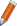
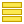
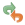

12. General Tools
12.1. Context help
Whenever you need help on a specific topic, you can access the corresponding page in the current User Manual via the Help button available in most dialogs — please note that third-party plugins can point to dedicated web pages.
12.2. Panels
By default, QGIS provides many panels to work with. Some of these panels are described below while others may be found in different parts of the document. A complete list of default panels provided by QGIS is available via the menu and mentioned at Panels.
12.2.1. Layers Panel
The Layers panel (also called the map legend) lists all
the layers in the project and helps you manage their visibility and shape the map.
You can show or hide the panel by pressing Ctrl+1.
QGIS provides a variety of ways to add layers to a project:
using the Add button from the dedicated data provider tab in the Data source manager dialog
from QGIS Browser panel or DB Manager: double-click, drag-and-drop files and layers onto QGIS or use the contextual menu
drag-and-drop files from the Operating System files explorer onto QGIS
In all these scenarios, you can open one or many layers at a time. New layers are added to the Layers panel:
if dropped over the Layers panel, at the exact location they are released
in the other cases, at a location that respects the global behavior used when adding new layers setting
and in case of multiple layers, they are sorted in a way that increases the chance of their stacking being logical and features being visible as most as possible, using the following logic (top to bottom):
vector point layers
vector line layers
vector polygon layers
point cloud layers
mesh layers
raster layers
At the top of the Layers panel, a toolbar allows you to:
 Open the layer styling dock (F7): toggle the
Layer Styling panel on and off.
Open the layer styling dock (F7): toggle the
Layer Styling panel on and off.Add new group: see Interact with groups and layers
 Manage Map Themes: control visibility of layers and
arrange them in different map themes.
Manage Map Themes: control visibility of layers and
arrange them in different map themes. filter layers in the legend tree:
filter layers in the legend tree:Filter Legend by Map Content: only the layers that are set visible and whose features intersect the current map canvas have their style rendered in the layers panel. Otherwise, a generic NULL symbol is applied to the layer. Based on the layer symbology, this is a convenient way to identify which kind of features from which layers cover your area of interest.
Show Private Layers: a convenient shortcut to display and interact with private layers in the Layers panel without modifying the project settings.
 Filter Legend by Expression: apply an
expression to remove styles from the selected layer tree that have no feature
satisfying the condition. This can be used to highlight features
that are within a given area/feature of another layer.
From the drop-down list, you can edit and clear the expression currently applied.
Filter Legend by Expression: apply an
expression to remove styles from the selected layer tree that have no feature
satisfying the condition. This can be used to highlight features
that are within a given area/feature of another layer.
From the drop-down list, you can edit and clear the expression currently applied.Expand All or
 Collapse All
layers and groups in the layers panel.
Collapse All
layers and groups in the layers panel. Remove Layer/Group currently selected.
Remove Layer/Group currently selected.
Fig. 12.1 Layer Toolbar in Layers Panel
Note
Tools to manage the layers panel are also available for map and legend items in print layouts
12.2.1.1. Configuring map themes
The Manage Map Themes drop-down button provides access to
convenient shortcuts to manipulate visibility of the layers in the Layers
panel:
 Show All Layers
Show All Layers Hide All Layers
Hide All Layers Show Selected Layers
Show Selected Layers Hide Selected Layers
Hide Selected Layers Toggle Selected Layers: changes the visibility of
the first selected layer in the panel, and applies that state to the other selected
layers. Also accesible through Space shortcut.
Toggle Selected Layers: changes the visibility of
the first selected layer in the panel, and applies that state to the other selected
layers. Also accesible through Space shortcut.Toggle Selected Layers Independently: changes the visibility status of each selected layer
 Hide Deselected Layers
Hide Deselected Layers
Beyond the simple control of layer visibility,
the Manage Map Themes menu allows you to configure
Map Themes in the legend and switch from one map theme to another.
A map theme is a snapshot of the current map legend that records:
the layers set as visible in the Layers panel
and for each visible layer:
the reference to the style applied to the layer
the visible classes of the style, ie the layer checked node items in the Layers panel. This applies to symbologies other than the single symbol rendering
the collapsed/expanded state of the layer node(s) and the group(s) it’s placed inside
To create a map theme:
Check a layer you want to show
Configure the layer properties (symbology, diagram, labels…) as usual
Expand the menu at the bottom and click on Add… to store the settings as a new style embedded in the project
Note
A map theme does not remember the current details of the properties: only a reference to the style name is saved, so whenever you apply modifications to the layer while this style is enabled (eg change the symbology rendering), the map theme is updated with new information.
Repeat the previous steps as necessary for the other layers
If applicable, expand or collapse groups or visible layer nodes in the Layers panel
Click on the
Manage Map Themes button on top of the panel,
and Add Theme…Enter the map theme’s name and click OK
The new theme is listed in the lower part of the drop-down menu.
You can create as many map themes as you need: whenever the current combination in the map legend (visible layers, their active style, the map legend nodes) does not match any existing map theme contents as defined above, click on Add Theme… to create a new map theme, or use to update a map theme. You can rename the active map theme with Rename Current Theme… or use the Remove Current Theme button to delete it.
Map themes are helpful to switch quickly between different preconfigured combinations: select a map theme in the list to restore its combination. All configured themes are also accessible in the print layout, allowing you to create different map items based on specific themes and independent of the current main canvas rendering (see Map item layers).
12.2.1.2. Overview of the context menu of the Layers panel
At the bottom of the toolbar, the main component of the Layers panel is the frame listing all the layers added to the project, optionally organized in groups. A layer with a checked box next to it displays its contents overlapping the map canvas extent, unless a scale-based visibility is set. A layer can be selected and dragged up or down in the legend to change the Z-ordering. Z-ordering means that layers listed nearer the top of the legend are drawn over layers listed lower down in the legend. Also a layer or a group of layers can be dragged across several QGIS instances.
Note
The Z-ordering behavior can be overridden by the Layer Order panel.
Depending on the item selected in the panel, a right-click shows a dedicated set of options presented below.
Option |
Group |
Vector Layer |
Raster Layer |
Mesh Layer |
Point Cloud Layer |
3D Layer |
|---|---|---|---|---|---|---|
|
|
|
|
|
|
|
|
|
|||||
|
|
|
|
|
||
Show Feature Count |
|
|||||
|
|
|||||
Copy Layer/Group |
|
|
|
|
|
|
Rename Layer/Group |
|
|
|
|
|
|
|
|
|||||
Stretch Using Current Extent |
|
|||||
|
|
|||||
|
|
|||||
|
||||||
|
|
|
|
|
|
|
|
|
|
|
|
|
|
Move Out of Group |
|
|
|
|
||
Move to Top |
|
|
|
|
|
|
Move to Bottom |
|
|
|
|
|
|
Check and all its Parents |
|
|
|
|
||
Group Selected |
|
|
|
|
||
|
|
|||||
|
|
|
||||
|
|
|
||||
Filter… |
|
|
|
|||
Change Data Source… |
|
|
|
|
||
Repair Data Source… |
|
|
|
|
||
(in edit mode) |
|
|||||
|
||||||
|
||||||
Set Layer Scale Visibility… |
|
|
|
|
|
|
Zoom to Visible Scale |
|
|
|
|
||
|
|
|
|
|
||
|
|
|
|
|
||
(recent CRSs) |
|
|
|
|||
|
|
|
|
|
||
|
||||||
Set Group WMS Data… |
|
|||||
|
|
|||||
Check and all its children (Ctrl-click) |
|
|||||
Uncheck and all its children (Ctrl-click) |
|
|||||
Make Permanent |
|
|||||
|
|
|
|
|
|
|
|
||||||
|
||||||
|
||||||
|
|
|
|
|
|
|
|
|
|
|
|
||
|
|
|
|
|
||
|
|
|
|
|
||
|
|
|
|
|
||
|
|
|
|
|
||
|
|
|
|
|
||
|
||||||
|
||||||
|
||||||
Add Layer Notes… |
|
|
|
|
|
|
Edit Layer Notes… |
|
|
|
|
||
Remove Layer Notes |
|
|
|
|
||
Properties… |
|
|
|
|
|


{kind=link}
{kind=link}
{kind=link}
For GRASS vector layers,  Toggle editing is not available.
See section Digitizing and editing a GRASS vector layer for information on editing GRASS vector
layers.
Toggle editing is not available.
See section Digitizing and editing a GRASS vector layer for information on editing GRASS vector
layers.
12.2.1.3. Interact with groups and layers
Layers in the legend window can be organized into groups. There are different ways to do this:
Press the
 icon to add a new group. Type in a name for
the group and press Enter. Now click on an existing layer and
drag it onto the group.
icon to add a new group. Type in a name for
the group and press Enter. Now click on an existing layer and
drag it onto the group.Select more than one layer, then press the
icon.
The selected layers are automatically inserted into the new group.Select some layers, right-click in the legend window and choose Group Selected. The selected layers will automatically be placed in a new group.
To move a layer out of a group, drag it out, or right-click on it and choose Move Out of Group: the layer is moved from the group and placed above it. Groups can also be nested inside other groups. If a layer is placed in a nested group, Move Out of Group will move the layer out of all nested groups.
To move a group or layer to the top of the layer panel, either drag it to the top, or choose Move to Top. If you use this option on a layer nested in a group, the layer is moved to the top in its current group. The Move to Bottom option follows the same logic to move layers and groups down.
The checkbox for a group will show or hide the checked layers in the group with one click. With Ctrl pressed, the checkbox will also turn on or off all the layers in the group and its sub-groups.
Ctrl-click on a checked / unchecked layer will uncheck / check the layer and all its parents.
Enabling the Mutually Exclusive Group option means you can make a group have only one layer visible at the same time. Whenever a layer within the group is set visible the others will be toggled not visible.
It is possible to select more than one layer or group at the same time by holding down the Ctrl key while clicking additional layers. You can then move all selected layers to a new group at the same time.
You may also delete more than one layer or group at once by selecting several items with the Ctrl key and then pressing Ctrl+D: all selected layers or groups will be removed from the layers list.
More information on layers and groups using indicator icon
In some circumstances, formatting or icons next to the layer or group in the Layers panel change to give more information about the layer/group. These elements are:
- to indicate that the layer is in edit mode and you can modify
the data
 to indicate that the layer being edited has some unsaved changes
 to indicate a filter applied
to the layer. Hover over the icon to see the filter expression and double-click
to update the query
to indicate a filter applied
to the layer. Hover over the icon to see the filter expression and double-click
to update the query to identify layers that are
required in the project, hence non removable
to identify layers that are
required in the project, hence non removableto identify an embedded group or layer and the path to their original project file
 to identify a layer whose data source was not available
at the project file opening (see Handling broken file paths).
Click the icon to update the source path or select Repair Data Source…
entry from the layer contextual menu.
to identify a layer whose data source was not available
at the project file opening (see Handling broken file paths).
Click the icon to update the source path or select Repair Data Source…
entry from the layer contextual menu. to remind you that the layer is a temporary scratch
layer and its content will be discarded when you
close this project. To avoid data loss and make the layer permanent, click
the icon to store the layer in any of the GDAL vector formats supported by QGIS.
to remind you that the layer is a temporary scratch
layer and its content will be discarded when you
close this project. To avoid data loss and make the layer permanent, click
the icon to store the layer in any of the GDAL vector formats supported by QGIS. to identify a layer used in offline editing mode.
to identify a layer used in offline editing mode. to identify a layer that has no/unknown CRS
to identify a layer that has no/unknown CRS for layers with coordinates stored in a coordinate
reference system which is inherently low accuracy (requires the
corresponding setting to be enabled)
for layers with coordinates stored in a coordinate
reference system which is inherently low accuracy (requires the
corresponding setting to be enabled) to identify a temporal layer controlled by canvas animation
to identify a temporal layer controlled by canvas animation to identify a layer that has notes associated
to identify a layer that has notes associatedA grayed name, when the map canvas current scale is outside the layer’s visibility scale range (as set in its properties). Select the contextual menu Zoom to Visible Scale option to zoom the map to the layer’s nearest visibility scale bound.
{kind=link}
{kind=link}
Control layers rendering through grouping
Groups are a means of structuring layers within a tree in the project but they can also impact how their component layers are rendered, namely as a single flattened object during map renders.
The option for such a rendering is available within the Layer Styling panel whenever a group is selected.
Under the Symbology tab, check  Render Layers as a Group
to enable a set of options to control the appearance of the child layers as a whole, instead of individual layers:
Render Layers as a Group
to enable a set of options to control the appearance of the child layers as a whole, instead of individual layers:
Opacity: Features from child layers which are obscured by other child layers remain obscured, and the opacity applies to the “whole of group” only.

Fig. 12.2 Setting opacity on layers vs on a group
The image on the left shows two layers being rendered at 50% opacity (underlying features are visible, but semi-masked by the 50% red feature on top). The second image shows the result of setting the opacity on the group (parts of the blue underlying child layer is completely obscured by the red layer on top and then the result is rendered at 50% opacity).
Blend modes: Just like opacity, setting a blend mode (like multiply, overlay, …) for an entire group results first in flattening features of child layers, with upper ones obscuring lower. The rendering is then obtained by blending the flat group and the layers sitting below the group.
When the child layers have blend modes assigned, it is applied before flattening but the scope is restricted to only affecting other child layers from that group, and not other layers sitting below the whole group.
Some more blending modes options are available for child layers in groups, in their Symbology tab which perform “clipping” style operations on other child layers during the render. You can e.g. clip the render of one layer’s content by the content in a second “mask” layer.
Layer effects: applies effects only to the flattened render of the child layers; So e.g. a drop shadow effect applied to the group would not be visible for obscured child layers.
When a group is set to Render layers as a group, then only the group will be shown in the Layer Order panel list. Group children will not be visible in this order list, as their ordering is determined by the placement of the group layer.
12.2.1.4. Editing layer style
From the Layers panel, you have shortcuts to change the layer rendering quickly and easily.
Right-click on a layer and select in the list in order to:
see the styles currently available for the layer. If you defined many styles for the layer, you can switch from one to another and your layer rendering will automatically be updated on the map canvas.
copy part or all of the current style, and when applicable, paste a copied style from another layer
Rename current… style
Add a new style (which is actually a copy of the current one)
or Remove current style (only when multiple styles are available).
Tip
Quickly share a layer style
From the context menu, copy the style of a layer and paste it to a group or a selection of layers: the style is applied to all the layers that are of the same type (vector, raster, mesh, point cloud, …) as the original layer and, for vector layers, have the same geometry type (point, line or polygon).
When using a symbology based on features classification (e.g. categorized, graduated or rule-based for vector layers, or classification for point clouds), right-clicking a class entry in the Layers panels makes it possible to edit the visibility of the classes (and their features) and avoid (un)checking them one by one:
 Toggle Items
Toggle Items- Show All Items
- Hide All Items
With vector layer, the contextual menu of a class leaf entry also gives access to:
 Select features: selects in the layer all the features matching that class
 Show in attribute table: opens an attribute table
filtered to only the features matching that class
Show in attribute table: opens an attribute table
filtered to only the features matching that classupdate the symbol color using a Color Wheel. For convenience, the recently used colors are also available at the bottom of the color wheel.
Edit Symbol…: opens the Symbol Selector dialog to change feature symbol (symbol, size, color…).
Copy Symbol
Paste Symbol
{kind=link}
Tip
Double-clicking a class leaf entry also opens the Symbol Selector dialog.
12.2.2. Layer Styling Panel
The Layer Styling panel (also enabled with Ctrl+3) is a shortcut to some of the functionalities of the Layer Properties dialog. It provides a quick and easy way to define the rendering and the behavior of a layer, and to visualize its effects without having to open the layer properties dialog.
In addition to avoiding the blocking (or “modal”) layer properties dialog, the layer styling panel also avoids cluttering the screen with dialogs, and contains most style functions (color selector, effects properties, rule edit, label substitution…): e.g., clicking color buttons inside the layer style panel causes the color selector dialog to be opened inside the layer style panel itself rather than as a separate dialog.
From a drop-down list of current layers in the layer panel, select an item and:
Depending on the active item, set:
- Symbology for groups (see Control layers rendering through grouping)
- Symbology,
 Transparency,
and
Transparency,
and  Histogram properties for raster layer.
These options are the same as in the Raster Properties Dialog.
Histogram properties for raster layer.
These options are the same as in the Raster Properties Dialog. - Symbology,
 Labels,
Labels,  Mask and
Mask and  3D View properties for vector layer.
These options are the same as in the The Vector Properties Dialog
and can be extended by custom properties introduced by third-party plugins.
3D View properties for vector layer.
These options are the same as in the The Vector Properties Dialog
and can be extended by custom properties introduced by third-party plugins. - Symbology and 3D View properties
for mesh layer.
These options are the same as in the Mesh Dataset Properties.
- Symbology, 3D View
and
 Elevation properties for point cloud layer.
These options are the same as in the Point Clouds Properties.
Elevation properties for point cloud layer.
These options are the same as in the Point Clouds Properties.
Enable and configure global map shading properties
Manage the associated style(s) in the
 Style Manager
(more details at Managing Custom Styles).
Style Manager
(more details at Managing Custom Styles).See the  History of changes you applied to the layer style in the current project: you can therefore cancel or restore to any state by selecting it in the list and clicking Apply.
{kind=link}
Another powerful feature of this panel is the Live update checkbox.
Tick it to render your changes immediately on the map canvas:
you no longer need to click the Apply button.

Fig. 12.3 Defining a layer’s symbology from the layer styling panel
12.2.3. Layer Order Panel
By default, layers shown on the QGIS map canvas are drawn following their order in the Layers panel: the higher a layer is in the panel, the higher (hence, more visible) it’ll be in the map view.
You can define a drawing order for the layers independent of the order in the
layers panel with the Layer Order panel enabled
in menu or with Ctrl+9.
Check Control rendering order underneath
the list of layers and reorganize the layers in the panel as you want. This
order becomes the one applied to the map canvas.
For example, in Fig. 12.4, you can see that the airports
features are displayed over the alaska polygon despite those layers’
respective placement in the Layers panel.
Unchecking Control rendering order will
revert to default behavior.
Fig. 12.4 Define a layer order independent of the legend
12.2.4. Overview Panel
The Overview panel (Ctrl+8) displays a map with a full extent view of some of the layers. The Overview map is filled with layers using the Show in Overview option from the menu or in the layer contextual menu. Within the view, a red rectangle shows the current map canvas extent, helping you quickly to determine which area of the whole map you are currently viewing. If you click-and-drag the red rectangle in the overview frame, the main map view extent will update accordingly.
Note that labels are not rendered to the map overview even if the layers used in the map overview have been set up for labeling.
12.2.5. Log Messages Panel
When loading or processing some operations, you can track and follow messages
that appear in different tabs using the  Log Messages Panel.
It can be activated using the most right icon in the bottom status bar.
Log Messages Panel.
It can be activated using the most right icon in the bottom status bar.
12.2.6. Undo/Redo Panel
For each layer being edited, the Undo/Redo (Ctrl+5) panel shows the list of actions carried out, allowing you quickly to undo a set of actions by selecting the action listed above. More details at Undo and Redo edits.
12.2.7. Statistical Summary Panel
The Statistics panel (Ctrl+6) provides summarized information on any vector layer. This panel allows you to select:
the vector layer to compute the statistics on: it can be selected from the top drop-down menu, or synced with the active layer in the Layers panel using the Follow selected layer checkbox at the bottom of the statistics drop-down list
the field or
 expression to use:
for each layer, the last entry is remembered and automatically computed
upon layer reselection.
expression to use:
for each layer, the last entry is remembered and automatically computed
upon layer reselection.the statistics to return using the drop-down button at the bottom-right of the dialog. Depending on the field’s (or expression’s values) type, available statistics are:
Statistics |
String |
Integer |
Float |
Date |
|---|---|---|---|---|
Count |
|
|
|
|
Count Distinct Value |
|
|
||
Count Missing value |
|
|
|
|
Sum |
|
|
||
Mean |
|
|
|
|
Standard Deviation |
|
|
||
Standard Deviation on Sample |
|
|
||
Minimal value |
|
|
|
|
Maximal value |
|
|
|
|
Range |
|
|
|
|
Minority |
|
|
|
|
Majority |
|
|
|
|
Variety |
|
|
||
First Quartile |
|
|
||
Third Quartile |
|
|
||
Inter Quartile Range |
|
|
||
Minimum Length |
|
|||
Maximum Length |
|
|||
Mean Length |
|
The statistical summary can be:
returned for the whole layer or
Selected features only copied to the clipboard and pasted as a table in another application
copied to the clipboard and pasted as a table in another applicationrecalculated using the
 button when the underlying data source changes
(eg, new or removed features/fields, attribute modification)
button when the underlying data source changes
(eg, new or removed features/fields, attribute modification)

Fig. 12.5 Show statistics on a field
12.2.8. Debugging/Development Tools Panel
The Debugging/Development Tools panel (F12) provides a unified place for handling and debugging actions within QGIS. Available tools are organized under following tabs:
 Query Logger
Query Logger Profiler - under this tab you can choose one out
of these categories:
Profiler - under this tab you can choose one out
of these categories:Startup helps you diagnose (and fix) occasional long startup times of QGIS.
Project Load allows you to get a breakdown of the various stages of project load, in order to identify the causes of slow project load times.
Map Render tool allows you to identify pain points in your map rendering and track down exactly which layers are causing long map redraws.
{kind=link}
Note
Plugin authors can extend the panel with custom tabs
for debugging and developping their own plugins.
This is done using registerDevToolWidgetFactory method.
12.2.8.1. Network Logger
The Network Logger tab helps you record and display network requests, along with a whole load of useful details like request and reply status, header, errors, SSL configuration errors, timeouts, cache status, etc.
From its top toolbar, you can:
 Clear Log: will clear the log history.
Clear Log: will clear the log history. Save Log…: will first show a big warning that
the log is sensitive and should be treated as confidential and then
allow you to save the log.
Save Log…: will first show a big warning that
the log is sensitive and should be treated as confidential and then
allow you to save the log.Press the
 Settings drop-down menu to select whether
to Show Successful Requests, Show Timeouts and
Show Replies Served from Cache.
Settings drop-down menu to select whether
to Show Successful Requests, Show Timeouts and
Show Replies Served from Cache. Disable cache: will disable the cache so that
every request has to be performed.
Disable cache: will disable the cache so that
every request has to be performed. Filter requests based on URL string subsets
or request status
Filter requests based on URL string subsets
or request status
{kind=link}
By right clicking on a request you can:
Open URL which will open the URL in your default browser.
Copy URL
Copy As cURL to use it in the terminal.
Copy as JSON: copies the tree values as a json string to the clipboard, for easy pasting in bug reports or for remote assistance.

Fig. 12.6 Network Logger output for GET Request
12.2.8.2. Query Logger
The Query Logger is the place to log the SQL commands
sent by the data provider and the connections API to the backend database,
together with their execution time as measured by QGIS (i.e. in the client
that sent the commands).
This can be useful when investigating performances of a particular layer
during debugging or development of a QGIS algorithm or plugin.
From its top toolbar, you can:
- Clear Log: will clear the log history.
- Save Log…: will first show a big warning that
the log is sensitive and should be treated as confidential and then
allow you to save the log.
- Filter queries based on the query string subsets
or details such as provider type, start time, initiator, …
Right-click on a reported query, and you can:
Copy SQL command called by QGIS on the database
Copy as JSON: copies the tree values as a json string to the clipboard, for easy pasting in bug reports or for remote assistance.

Fig. 12.7 Query Logger output
12.2.8.3. Profiler
The Profiler tab allows to get load times for every
single operation involved in actions requested by the user. Depending on
the context, these operations can be settings reading, menu, map canvas or 3D
views creation, resolving map layers reference, bookmark or layout loading, …
This helps identify causes of slow load times.
Default supported actions can be selected from the Categories drop-down menu:
QGIS Startup
Project Load

Fig. 12.8 Profiler for QGIS Startup
12.3. Embedding layers from external projects
Sometimes, you’d like to keep some layers in different projects, but with the same style. You can either create a default style for these layers or embed them from another project to save time and effort.
Embed layers and groups from an existing project has some advantages over styling:
All types of layers (vector or raster, local or online…) can be added
Fetching groups and layers, you can keep the same tree structure of the “background” layers in your different projects
While the embedded layers are editable, you can’t change their properties such as symbology, labels, forms, default values and actions, ensuring consistency across projects
Modify the items in the original project and changes are propagated to all the other projects
If you want to embed content from other project files into your project, select :
Click the … button to look for a project: you can see the content of the project (see Fig. 12.9)
Hold down Ctrl ( or Cmd) and click on the layers and groups you wish to retrieve
Click OK
{kind=link}
The selected layers and groups are embedded in the Layers panel and displayed on the map canvas. An icon is added next to their name for recognition and hovering over displays a tooltip with the original project file path.

Fig. 12.9 Select layers and groups to embed
Like any other layer, an embedded layer can be removed from the project by
right-clicking on the layer and clicking Remove.
Tip
Change rendering of an embedded layer
It’s not possible to change the rendering of an embedded layer, unless you make the changes in the original project file. However, right-clicking on a layer and selecting Duplicate creates a layer which is fully-featured and not dependent on the original project. You can then safely remove the linked layer.
12.4. Interacting with features
12.4.1. Selecting features
QGIS provides several tools to select features on the map canvas. Selection tools are available in the menu or in the Selection Toolbar.
Note
Selection tools work with the currently active layer.
12.4.1.1. Selecting manually on the map canvas
To select one or more features with the mouse, you can use one of the following tools:
 Select Features by area or single click
Select Features by area or single click Select Features by Polygon
Select Features by Polygon Select Features by Freehand
Select Features by Freehand Select Features by Radius
Select Features by Radius
Note
Other than Select Features by Polygon, these
manual selection tools allow you to select feature(s) on the map canvas with a
single click.
Note
Use the Select Features by Polygon tool
to use an existing polygon feature (from any layer) to select overlapping features
in the active layer.
Right-click in the polygon and choose it from the context menu that shows a
list of all the polygons that contain the clicked point.
All the overlapping features from the active layer are selected.
Tip
Use the tool to redo your latest selection. Very useful when you have painstakingly made a selection, and then click somewhere else accidentally and clear your selection.
While using the Select Feature(s) tool,
holding Shift or Ctrl toggles whether a feature is selected
(ie either adds to the current selection or remove from it).
For the other tools, different behaviors can be performed by holding down:
Shift: add features to the current selection
Ctrl: substract features from the current selection
Ctrl+Shift: intersect with current selection, ie only keep overlapping features from the current selection
Alt: select features that are totally within the selection shape. Combined with Shift or Ctrl keys, you can add or substract features to/from the current selection.
12.4.1.2. Automatic selection
The other selection tools, most of them available from the Attribute table, perform a selection based on a feature’s attribute or its selection state (note that attribute table and map canvas show the same information, so if you select one feature in the attribute table, it will be selected on the map canvas too):
 Select By Expression… select
features using expression dialog
Select By Expression… select
features using expression dialog Select Features By Value… or press F3
Select Features By Value… or press F3 Deselect Features from All Layers or press
Ctrl+Alt+A to deselect all selected features in all layers
Deselect Features from All Layers or press
Ctrl+Alt+A to deselect all selected features in all layers Deselect Features from the Current Active Layer
or press Ctrl+Shift+A
Deselect Features from the Current Active Layer
or press Ctrl+Shift+ASelect All Features or press Ctrl+A to select all features in the current layer
 Invert Feature Selection to invert the selection in
the current layer
Invert Feature Selection to invert the selection in
the current layer Select by Location to select the features
based on their spatial relationship with other features (in the same or
another layer - see Select by location)
Select by Location to select the features
based on their spatial relationship with other features (in the same or
another layer - see Select by location) Select within distance to select features
wherever they are within the specified maximum distance from referenced features -
see Select within distance)
Select within distance to select features
wherever they are within the specified maximum distance from referenced features -
see Select within distance)
For example, if you want to find regions that are boroughs from
regions.shp of the QGIS sample data, you can:
Use the
Select features using an Expression iconExpand the Fields and Values group
Double-click the field that you want to query (“TYPE_2”)
Click All Unique in the panel that shows up on the right
From the list, double-click ‘Borough’. In the Expression editor field, write the following query:
"TYPE_2" = 'Borough'
Click Select Features
From the expression builder dialog, you can also use to make a selection that you have used before. The dialog remembers the last 20 expressions used. See Expressions for more information and examples.
Tip
Save your selection into a new file
Users can save selected features into a New Temporary Scratch Layer or a New Vector Layer using and in the desired format.
12.4.1.3. Select Features By Value
This selection tool opens the layer’s feature form allowing the user to choose which value to look for for each field, whether the search should be case-sensitive, and the operation that should be used. The tool has also autocompletes, automatically filling the search box with existing values.
Fig. 12.10 Filter/Select features using form dialog
Alongside each field, there is a drop-down list with options to control the search behaviour:
Field search option |
String |
Numeric |
Date |
|---|---|---|---|
Exclude Field from the search |
|
|
|
Equal to (=) |
|
|
|
Not equal to (≠) |
|
|
|
Greater than (>) |
|
|
|
Less than (<) |
|
|
|
Greater than or equal to (≥) |
|
|
|
Less than or equal to (≤) |
|
|
|
Between (inclusive) |
|
|
|
Not between (inclusive) |
|
|
|
Contains |
|
||
Does not contain |
|
||
Is missing (null) |
|
|
|
Is not missing (not null) |
|
|
|
Starts with |
|
||
Ends with |
|
For string comparisons, it is also possible to use the
Case sensitive option.
After setting all search options, click Select features to select the matching features. The drop-down options are:
Select features
Add to current selection
Remove from current selection
Filter current selection
You can also clear all search options using the Reset form button.
Once the conditions are set, you can also either:
Zoom to features on the map canvas without the need of a preselection
Flash features, highlighting the matching features. This is a handy way to identify a feature without selection or using the Identify tool. Note that the flash does not alter the map canvas extent and would be visible only if the feature is within the bounds of the current map canvas.
12.4.2. Identifying Features
The  Identify Features tool allows you to interact with the map canvas
and get information on features or pixels in a pop-up window.
It can be used to query most of the layer types supported by QGIS
(vector, raster, mesh, point cloud, wms, wfs, …).
To identify an element, use either:
Identify Features tool allows you to interact with the map canvas
and get information on features or pixels in a pop-up window.
It can be used to query most of the layer types supported by QGIS
(vector, raster, mesh, point cloud, wms, wfs, …).
To identify an element, use either:
Then click on a feature or pixel of the active layer. The identified item gets highlighted in the map canvas while the Identify Results dialog opens with detailed information on it. The dialog also shows a set of buttons for advanced configuration.
12.4.2.1. The Identify Results dialog
Fig. 12.11 Identify Results dialog
From bottom to top:
The View controls the general aspect of the dialog and the formatting of the results; it can be set as:
Tree: this is the default view, and returns the results in a tree-structure
Table: available only for raster-based layers, it allows to display the results as a table whose columns are
Layer,FID,AttributeandValueor Graph: available only for raster-based layers
The Mode helps you select the layers from which results could be returned. These layers should be set visible, displaying data in the map canvas, and set identifiable from the . Available modes are:
Current layer: only the layer(s) selected in the Layers panel return results. If a group is selected, then results are picked from its leaf layers.
Top down, stop at first: results are from the layer of the top most feature or pixel under the mouse.
Top down: results are from the layers with feature or pixel under the mouse.
Layer selection: opens a contextual menu where the user selects the layer to identify features from. If only a single feature is under the mouse, then the results are automatically displayed.
In the upper part of the Identify Results dialog, a frame shows the information returned by features as a table, a graph or a tree, depending on the selected view. When in a tree view, you have a handful of tools above the results:
 Open Form of the current feature
Open Form of the current feature- Collapse tree
 Expand New Results by Default to define whether the next
identified feature’s information should be collapsed or expanded
Expand New Results by Default to define whether the next
identified feature’s information should be collapsed or expanded- Clear Results
- Copy the identified feature to clipboard, suitable for pasting in a spreadsheet.
Print selected HTML response: a text-based formatting of the results to print on paper or save as a
.PDFfilethe interactive identifying tools: a drop-down menu with tools for selecting on the map canvas features or pixels to identify
Under
Identify Settings, you can activate whether to:- Auto open form for single feature results:
If checked, each time a single feature is identified, a form opens showing its attributes.
This is a handy way to quickly edit a feature’s attributes.
- Hide derived attributes from results
to only show fields actually defined in the layer
- Hide NULL values from results
 Help to access the current documentation
Help to access the current documentation
{kind=link}
12.4.2.2. Using the Identify Features tool
In its default display (View: Tree), the Identify Results panel offers several tools to interact with the layers to query. A smart combination of these tools with the target layers selector may greatly improve identification operations:
 Identify Feature(s) by single click or click-and-drag
Identify Feature(s) by single click or click-and-dragsingle click or click-and-drag: overlaying features in the target layers are returned
right-click: overlaying features from target layers are listed in the contextual menu, grouped by layers. You can then choose to:
display the result for a specific feature,
display the result for all the features of a specific layer,
for vector layers, it is also possible to open its attribute table filtered to the returned features
or show all of the returned features.
 Identify Features on Mouse over:
move over the map canvas and hovered items in the target layers get highlighted
and returned in the results panel.
Identify Features on Mouse over:
move over the map canvas and hovered items in the target layers get highlighted
and returned in the results panel. Identify Features by Polygon:
returns items overlapping a drawn or selected polygon.
Identify Features by Polygon:
returns items overlapping a drawn or selected polygon.Draw a polygon (left click to add point, right click to close the polygon) and all the overlaying features from target layers are highlighted and returned in the results panel.
Right-click and you get the list of all visible polygon features in the project under the click. Pick an entry and QGIS will return all the features from the target layers that overlap the selected polygon.
 Identify Features by Freehand:
returns items overlapping a polygon drawn by freehand.
Draw a polygon (left-click to start, move the pointer to shape the area
and right-click to close the polygon).
All the overlaying features from target layers are highlighted
and returned in the results panel.
Identify Features by Freehand:
returns items overlapping a polygon drawn by freehand.
Draw a polygon (left-click to start, move the pointer to shape the area
and right-click to close the polygon).
All the overlaying features from target layers are highlighted
and returned in the results panel. Identify Features by Radius
returns items overlapping a drawn circle.
Draw a cercle (left-click to indicate the center point,
move the pointer to shape the area or enter the radius in the pop-up text box
and left-click or press Enter to validate the circle).
All the overlaying features from target layers are highlighted
and returned in the results panel.
Identify Features by Radius
returns items overlapping a drawn circle.
Draw a cercle (left-click to indicate the center point,
move the pointer to shape the area or enter the radius in the pop-up text box
and left-click or press Enter to validate the circle).
All the overlaying features from target layers are highlighted
and returned in the results panel.
Tip
Filter the layers to query with the Identify Features tool
Under ,
uncheck the Identifiable column next to a layer
to avoid it being queried when using the Identify Features tool.
This is a handy way to return features from only layers that are of interest to you.
12.4.2.3. Feature information
When you identify a data in the map canvas, the Identify Results dialog will list information about the items clicked (or hovered over, depending on the tool in use). The default view is a tree view in which the first item is the name of the layer and its children are its identified feature(s). Each feature is described by the name of a field along with its value. This field is the one set in . All the other information about the feature follows.
The feature information displayed by the identify tool will depend on the type of layer you have selected, whether it is a vector layer (including vector tiles or point cloud data) or raster layer. If your layer is raster, clicking on a location on the map canvas with identify tool will highlight the identified raster pixel. The Identify Results dialog can be customized to display custom fields, but by default it will display the following information:
The feature display name;
Actions: Actions can be added to the identify feature windows. The action is run by clicking on the action label. By default, only one action is added, namely
View feature formfor editing. You can define more actions in the layer’s properties dialog (see Actions Properties).Derived: This information is calculated or derived from other information. It includes:
general information about the feature’s geometry:
depending on the geometry type, the cartesian measurements of length, perimeter or area in the layer’s CRS units. For 3D line vectors the cartesian line length is available.
depending on the geometry type and if an ellipsoid is set in the project properties dialog for Measurements, the ellipsoidal values of length, perimeter or area using the specified units
the count of geometry parts in the feature and the number of the part clicked
the count of vertices in the feature
coordinate information, using the project properties Coordinates display settings:
XandYcoordinate values of the point clickedthe number of the closest vertex to the point clicked
XandYcoordinate values of the closest vertex (andZ/Mif applicable)if you click on a curved segment, the radius of that section is also displayed.
Data attributes: This is the list of attribute fields and values for the feature that has been clicked.
information about the related child feature if you defined a relation:
the name of the relation
the entry in reference field, e.g. the name of the related child feature
Actions: lists actions defined in the layer’s properties dialog (see Actions Properties) and the default action is
View feature form.Data attributes: This is the list of attributes fields and values of the related child feature.
Note
Links in the feature’s attributes are clickable from the Identify Results panel and will open in your default web browser.
12.5. Save and Share Layer Properties
12.5.1. Managing Custom Styles
When a vector layer is added to the map canvas, QGIS by default uses a random symbol/color to render its features. However, you can set a default symbol in that will be applied to each newly added layer according to its geometry type.
Most of the time, though, you’d rather have a custom and more complex style that can be applied automatically or manually to the layers (with less effort). You can achieve this by using the menu at the bottom of the Layer Properties dialog. This menu provides you with functions to create, load and manage styles.
A style stores any information set in the layer properties dialog to render or interact with the layer (including symbology, labeling, fields and form definitions, actions, diagrams…) for vector layers, or the pixels (band or color rendering, transparency, pyramids, histogram …) for raster.

Fig. 12.12 Vector layer style combo box options
By default, the style applied to a loaded layer is named default. Once you
have got the ideal and appropriate rendering for your layer, you can save it by
clicking the  combo box and choosing:
combo box and choosing:
Rename Current: The active style is renamed and updated with the current options
Add: A new style is created using the current options. By default, it will be saved in the QGIS project file. See below to save the style in another file or a database
Remove: Delete unwanted style, in case you have more than one style defined for the layer.
At the bottom of the Style drop-down list, you can see the styles set for the layer with the active one checked.
Note that each time you validate the layer properties dialog, the active style is updated with the changes you’ve made.
You can create as many styles as you wish for a layer but only one can be active at a time. In combination with Map Themes, this offers a quick and powerful way to manage complex projects without the need to duplicate any layer in the map legend.
Note
Given that whenever you apply modifications to the layer properties, changes are stored in the active style, always ensure you are editing the right style to avoid mistakenly altering a style used in a map theme.
Tip
Manage styles from layer context menu
Right-click on the layer in the Layers panel to copy, paste, add or rename layer styles.
12.5.2. Storing Styles in a File or a Database
While styles created from the Style combo box are by default saved inside the project and can be copied and pasted from layer to layer in the project, it’s also possible to save them outside the project so that they can be loaded in another project.
12.5.2.1. Save as text file
Clicking the , you can
save the style as a:
QGIS layer style file (
.qml)SLD file (
.sld), only available for vector layers
Used on file-based format layers (.shp, .tab…), Save
as Default generates a .qml file for the layer (with the same name).
SLDs can be exported from any type of renderer – single symbol,
categorized, graduated or rule-based – but when importing an SLD, either a
single symbol or rule-based renderer is created.
This means that categorized or graduated styles are converted to rule-based.
If you want to preserve those renderers, you have to use the QML format.
On the other hand, it can be very handy sometimes to have this easy way of
converting styles to rule-based.
12.5.2.2. Save in database
Vector layer styles can also be stored in a database if the layer datasource is a
database provider. Supported formats are PostGIS, GeoPackage, SpatiaLite, MS SQL Server
and Oracle. The layer style is saved inside a table (named layer_styles)
in the database. Click on
then fill in the dialog to define a style name, add a description, a .ui
file if applicable and to check if the style should be the default style.
You can save several styles for a single table in the database. However, each
table can have only one default style. Default styles can be saved in the layer
database or in qgis.db, a local SQLite database in the active
user profile directory.

Fig. 12.13 Save Style in database Dialog
Tip
Sharing style files between databases
You can only save your style in a database if the layer comes from such a database. You can’t mix databases (layer in Oracle and style in MS SQL Server for instance). Use instead a plain text file if you want the style to be shared among databases.
Note
You may encounter issues restoring the layer_styles table from a
PostgreSQL database backup. Follow QGIS layer_style table and database backup to fix that.
12.5.2.3. Load style
When loading a layer in QGIS, if a default style already exists for this layer, QGIS loads the layer with this style. Also looks for and loads that file, replacing the layer’s current style.
helps you apply any saved style to a
layer. While text-file styles (.sld or .qml) can be applied
to any layer whatever its format, loading styles stored in a database is only
possible if the layer is from the same database or the style is stored in the
QGIS local database.
The Database Styles Manager dialog displays a list of styles related to the layer found in the database and all the other styles saved in it, with name and description.
Tip
Quickly share a layer style within the project
You can also share layer styles within a project without importing a file or database style: right-click on the layer in the Layers Panel and, from the Styles combo box , copy the style of a layer and paste it to a group or a selection of layers: the style is applied to all the layers that are of the same type (vector vs raster) as the original layer and, in the case of vector layers, have the same geometry type (point, line or polygon).
12.5.3. Layer definition file
Layer definitions can be saved as a Layer Definition File
(.qlr) using
in the
active layers’ context menu.
A layer definition file (.qlr) includes references to the
data source of the layers and their styles.
.qlr files are shown in the Browser Panel and can be used to add
the layers (with the saved style) to the Layers Panel.
You can also drag and drop .qlr files from the system file manager into the map
canvas.
12.6. Documenting your data
In addition to displaying and symbolizing the data in the layers, QGIS allows you to fill:
metadata: information to help people find and understand the dataset, how they can access and use it… these are properties of the datasource and can live out of the QGIS project.
notes: instructions and comments regarding the layer in the current project
12.6.1. Metadata
In the layer properties dialog, the  Metadata tab
provides you with options to create and edit a metadata report on your layer.
Metadata tab
provides you with options to create and edit a metadata report on your layer.
Information to fill concern:
the data Identification: basic attribution of the dataset (parent, identifier, title, abstract, language…);
the Categories the data belongs to. Alongside the ISO categories, you can add custom ones;
the Keywords to retrieve the data and associated concepts following a standard based vocabulary;
the Access to the dataset (licenses, rights, fees, and constraints);
the Extent of the dataset, either spatial one (CRS, map extent, altitudes) or temporal;
the Contact of the owner(s) of the dataset;
the Links to ancillary resources and related information;
the History of the dataset.
A summary of the filled information is provided in the Validation tab and helps you identify potential issues related to the form. You can then either fix them or ignore them.
Metadata are saved in the project file by default, the Metadata drop-down
offers options for loading/saving metadata from .qmd file
and for loading/saving metadata in the “Default” location.
Fig. 12.14 Metadata load/save options
The “Default” location used by Save to Default Location and Restore from Default Location changes depending on the underlying data source and on its configuration:
For PostgreSQL data sources if the configuration option Allow saving/loading QGIS layer metadata in the database is checked the metadata are stored inside a dedicated table in the database.
For GeoPackage data sources Save to Default Location always saves the metadata in the internal metadata tables of the GeoPackage.
When metadata are saved into the internal tables of PostgreSQL or GeoPackage they become available for search and filtering in the browser and in the layer metadata search panel.
For all other file based data sources Save to Default Location saves the metadata in a
.qmdfile alongside the file.In all other cases Save to Default Location saves the metadata in a local
.sqlitedatabase.
12.6.2. Layer notes
Layer notes allow you to document the layer within the current project. They can be place to store important messages for users of the project like to do lists, instructions, warnings, …
From the layer’s contextual menu in Layers panel, select Add layer notes… and fill the open dialog with necessary texts.

Fig. 12.15 Adding notes to a layer
The Add layer notes dialog provides a html-based multiline text box with a complete set of tools for:
text manipulation: cut, copy, paste, undo, redo
characters formatting, applied to all or parts of the contents: font size and color, bold, italic, underline, strikethrough, background color, URL highlighting
paragraph structuring: bullet and numbered lists, indentation, predefined headings
file insertion, even with drag-and-drop
editing with HTML coding
From the … drop-down at the far right of the toolbar, you can:
Remove all formatting
Remove character formatting
Clear all content
In the Layers panel, a layer with a note is assigned
the icon which, upon hover, displays the note.
Click the icon to edit the note. You can as well right-click the layer and
Edit layer note… or Remove layer note.
Note
Notes are part of the layer style and
can be saved in the .qml or .qlr file. They can also be
transferred from one layer to another while copy-pasting the layer style.
12.7. Storing values in Variables
In QGIS, you can use variables to store useful recurrent values (e.g. the
project’s title, or the user’s full name) that can be used in expressions.
Variables can be defined at the application’s global level, project level,
layer level, processing modeler level, layout level, and layout item’s level.
Just like CSS cascading rules, variables can be overwritten - e.g., a project level
variable will overwrite any application global level variables set with
the same name. You can use these variables to build text strings or other
custom expressions using the @ character before the variable name. For
example in print layout creating a label with this content:
This map was made using QGIS [% @qgis_version %]. The project file for this
map is: [% @project_path %]
Will render the label like this:
This map was made using QGIS 3.4.4-Madeira. The project file for this map is:
/gis/qgis-user-conference-2019.qgs
Besides the preset read-only variables, you can define your own custom variables for any of the levels mentioned above. You can manage:
global variables from the menu
project variables from the Project Properties dialog (see Project Properties)
vector layer variables from the Layer Properties dialog (see The Vector Properties Dialog);
modeler variables from the Model Designer dialog (see The model designer);
layout variables from the Layout panel in the Print layout (see The Layout Panel);
and layout item variables from the Item Properties panel in the Print layout (see Layout Items Common Options).
To differentiate from editable variables, read-only variable names and values are displayed in italic. On the other hand, higher level variables overwritten by lower level ones are strike through.

Fig. 12.16 Variables editor at the project level
Note
You can read more about variables and find some examples in Nyall Dawson’s Exploring variables in QGIS 2.12, part 1, part 2 and part 3 blog posts.
12.8. Authentication
QGIS has the facility to store/retrieve authentication credentials in a secure manner. Users can securely save credentials into authentication configurations, which are stored in a portable database, can be applied to server or database connections, and are safely referenced by their ID tokens in project or settings files. For more information see Authentication System.
A master password needs to be set up when initializing the authentication system and its portable database.
12.9. Common widgets
In QGIS, there are some options you’ll often have to work with. For convenience, QGIS provides you with special widgets that are presented below.
12.9.1. Color Selector
12.9.1.1. The color dialog
The Select Color dialog will appear whenever you click
the  icon to choose a color. The features of this dialog
depend on the state of the Use native color chooser dialogs
parameter checkbox in .
When checked, the color dialog used is the native one of the OS on which
QGIS is running. Otherwise, the QGIS custom color chooser is used.
icon to choose a color. The features of this dialog
depend on the state of the Use native color chooser dialogs
parameter checkbox in .
When checked, the color dialog used is the native one of the OS on which
QGIS is running. Otherwise, the QGIS custom color chooser is used.
The custom color chooser dialog has four different tabs which allow you to
select colors by  Color ramp,
Color ramp,  Color wheel,
Color wheel,
 Color swatches or
Color swatches or  Color picker.
With the first two tabs, you can browse to all possible color combinations and
apply your choice to the item.
Color picker.
With the first two tabs, you can browse to all possible color combinations and
apply your choice to the item.
Fig. 12.17 Color selector ramp tab
In the Color swatches tab, you can choose from a
list of color palettes (see Colors settings for details).
All but the Recent colors palette can be modified with the
 Add current color and
Add current color and  Remove selected color
buttons at the bottom of the frame.
Remove selected color
buttons at the bottom of the frame.
The … button next to the palette combo box also offers several options to:
copy, paste, import or export colors
create, import or remove color palettes
add the custom palette to the color selector widget with the Show in Color Buttons item (see Fig. 12.19)

Fig. 12.18 Color selector swatches tab
Another option is to use the Color picker which allows
you to sample a color from under your mouse cursor at any part of the QGIS UI or even
from another application: press the space bar while the tab is active, move the
mouse over the desired color and click on it or press the space bar again. You
can also click the Sample Color button to activate the picker.
Whatever method you use, the selected color is always described through color
sliders for HSV (Hue, Saturation, Value) and RGB (Red, Green, Blue)
values. The color is also identifiable in HTML notation.
Modifying a color is as simple as clicking on the color wheel or ramp or on any of the color parameters sliders. You can adjust such parameters with the spinbox beside or by scrolling the mouse wheel over the corresponding slider. You can also type the color in HTML notation. Finally, there is an Opacity slider to set transparency level.
The dialog also provides a visual comparison between the
Old color (applied to object) and the Current one (being selected).
Using drag-and-drop or pressing the  Add color to
swatch button, any of these colors can be saved in a slot for easy access.
Add color to
swatch button, any of these colors can be saved in a slot for easy access.
Tip
Quick color modification
Drag-and-drop a color selector widget onto another one to apply its color.
12.9.1.2. The color drop-down shortcut
Click the drop-down arrow to the right of the color button
to display a widget for quick color selection. This shortcut provides access
to:
a color wheel to pick a color from
an alpha slider to change color opacity
the color palettes previously set to Show in Color Buttons
copy the current color and paste it into another widget
pick a color from anywhere on your computer display
choose a color from the color selector dialog
drag-and-drop the color from one widget to another for quick modification
Tip
Scroll the mouse wheel over a color selector widget to quickly modify the opacity of the associated color.
Note
When the color widget is set to a project color through the data-defined override properties, the above functions for changing the color are unavailable. You’d first need to Unlink color or Clear the definition.

Fig. 12.19 Quick color selector menu
12.9.1.3. The color ramp drop-down shortcut
Color ramps are a practical way to apply a set of colors to one or many features.
Their creation is described in the Setting a Color Ramp section. As for the colors,
pressing the  color ramp button opens the corresponding color
ramp type dialog allowing you to change its properties.
color ramp button opens the corresponding color
ramp type dialog allowing you to change its properties.

Fig. 12.20 Customizing a colorbrewer ramp
The drop-down menu to the right of the button gives quick access to a wider set of color ramps and options:
Invert Color Ramp
Clear Current Ramp to unset any assigned color ramp to the widget (available only in some contexts)
- Random Colors: available only in some contexts
(e.g., when a color ramp is being used for a layer symbology),
checking this entry creates and applies a color ramp with random colors.
It also enables a Shuffle random colors entry to regenerate
a new random color ramp if the current one is not satisfactory.
a preview of the
gradientorcatalog: cpt-citycolor ramps flagged as Favorites in the Style Manager dialogAll Color Ramps to access the compatible color ramps database
Create New Color Ramp… of any supported type that could be used in the current widget (note that this color ramp will not be available elsewhere unless you save it in the library)
Edit Color Ramp…, the same as clicking the whole color ramp button
Save Color Ramp…, to save the current color ramp with its customizations in the style library
Fig. 12.21 Quick color ramp selection widget
12.9.2. Symbol Widget
The Symbol selector widget is a convenient shortcut when you want to set symbol properties of a feature. Clicking the drop-down arrow shows the following symbol options, together with the features of the color drop-down widget:
Configure Symbol…: the same as pressing the symbol selector widget. It opens a dialog to set the symbol parameters.
Copy Symbol from the current item
Paste Symbol to the current item, speeding configuration
Clear Current Symbol to unset any assigned symbol to the widget (available only in some contexts)
Tip
Scroll the mouse wheel over a marker or line symbol widget to quickly modify the size of the associated symbol.
12.9.3. Remote or embedded file selector
Along with the file selector widget, the … button will sometimes show a drop-down arrow. This is usually available when using:
an SVG file in a symbol or a label
a raster image to customize symbols, labels, textures or decorations
Pressing the arrow will provide you with a menu to:
Select File…, to load the file from the file system. The file is identified through the file path and QGIS needs to resolve the path in order to display the corresponding image
From URL…, to load the file from a remote URL. As above, the image will only be loaded on successful retrieval of the remote resource
Embed File…, to embed the file inside the current project, style database, or print layout template. The file is then always rendered as part of the item. This is a convenient way to create self-contained projects with custom symbols which can be easily shared amongst different users and installations of QGIS.
Extract Embedded File…, to extract the embedded file from the widget and save it on disk.
12.9.4. Visibility Scale Selector
The visibility scale selector provides options to control the scales at which an element will be made visible in the map canvas. Out of the specified range of scales, the elements are not displayed. It can be applied e.g. to layers, labels or diagrams, from their Rendering properties tab.
Tick the
Scale dependent visibility boxFill the Minimum (exclusive) box with the most zoomed out desired scale, typing the value or selecting it from the predefined scales
and/or fill the Maximum (inclusive) box with the most zoomed in desired scale
The
 Set to current canvas scale button next to
the scale boxes sets the current map canvas scale as boundary of the range visibility.
Press the arrow next to the button to access scales from layouts’ maps
and reuse them to fill the box.
Set to current canvas scale button next to
the scale boxes sets the current map canvas scale as boundary of the range visibility.
Press the arrow next to the button to access scales from layouts’ maps
and reuse them to fill the box.
Fig. 12.22 Visibility scale selector widget
12.9.5. Spatial Extent Selector
The Extent selector widget is a convenient shortcut when you want to select a spatial extent to assign to a layer or to limit the actions to run on. Depending on the context, it offers selection between:
Current Layer Extent: e.g. when exporting a layer
: uses extent of a layer loaded in the current project
Use current Map Canvas Extent
Draw on Canvas: a rectangle whose coordinates are then used
Calculate from Bookmark: uses extent of a saved bookmark
Calculate from Layout Map: uses extent of a layout map
Enter or edit the coordinates as
xmin, xmax, ymin, ymax

Fig. 12.23 Extent selector widget
12.9.6. Font Selector
The Font selector widget is a convenient shortcut when you want to set font properties for textual information (feature labels, decoration labels, map legend text, …). Clicking the drop-down arrow shows some or all of the following options:

Fig. 12.24 Font selector drop-down menu
Clear Current Text Format to unset any assigned text format to the widget (available only in some contexts)
Font Size in the associated unit
menu with the active font checked (at the top)
Configure Format…: same as pressing the font selector widget. It opens the Text format dialog, providing advanced formatting options such as color, opacity, orientation, HTML notation, buffer, background, shadow, …
Copy Format of the text
Paste Format to the text, speeding configuration
the color widget for quick color setting
Tip
Scroll the mouse wheel over a font selector widget to quickly modify the font size of the associated text.
12.9.7. Unit Selector
Size properties of the items (labels, symbols, layout elements, …) in QGIS are not necessarily bound to either the project units or the units of a particular layer. For a large set of properties, the Unit selector drop-down menu allows you to tweak their values according to the rendering you want (based on screen resolution, paper size, or the terrain). Available units are:
Millimeters
Points
Pixels
Inches
Percentage: allows you to set some properties as a percent of another one. For example, this is useful for creation of text formats where the components (buffer size, shadow radius…) nicely scale as the text size is changed, instead of having constant buffer/shadow sizes. So you don’t need to adjust those sizes, when the text size changes.
Meters at Scale: This allows you to always set the size in meters, regardless of what the underlying map units are (e.g. they can be in inches, feet, geographic degrees, …). The size in meters is calculated based on the current project ellipsoid setting and a projection of the distances in meters at the center of the current map extent. For maps in a projected coordinate system this is calculated using projected units. For maps in a geographic (latitude/longitude) based system the size is approximated by calculating meter sizes using ellipsoidal calculations for the vertical scale of the map.
and Map Units: The size is scaled according to the map view scale. Because this can lead to too big or too small values, use the
button
next to the entry to constrain the size to a range of values based on:The Minimum scale and the Maximum scale: The value is scaled based on the map view scale until you reach any of these scale limits. Out of the range of scale, the value at the nearest scale limit is kept.
and/or The Minimum size and the Maximum size in
mm: The value is scaled based on the map view scale until it reaches any of these limits; Then the limit size is kept.

Fig. 12.25 Adjust scaling range dialog
12.9.8. Number Formatting
Numeric formatters allow formatting of numeric values for display, using a variety of different formatting techniques (for instance scientific notation, currency values, percentage values, etc). One use of this is to set text in a layout scale bar or fixed table.
Fig. 12.26 Formatting numeric value
Different categories of formats are supported. For most of them, you can set part or all of the following numeric options:
- Show thousands separator
- Show plus sign
- Show trailing zeros
But they can also have their custom settings. Provided categories are:
General, the default category: has no setting and displays values as set in the parent widget properties or using the global settings.
Number
The value can be Round to a self defined number of Decimal places or their Significant figures
customize the Thousands separator and Decimal separator
Bearing for a text representation of a direction/bearing using:
Format: possible ranges of values are
0 to 180°, with E/W suffix,-180 to +180°and0 to 360°number of Decimal places
Currency for a text representation of a currency value.
Prefix
Suffix
number of Decimal places
Fraction for a vulgar fractional representation of a decimal value (e.g. 1/2 instead of 0.5)
- Use unicode super/subscript to show. For example 1/2
instead of 1/2
- Use dedicated Unicode characters
customize the Thousands separator
Percentage - appends
%to the values, with setting of:number of Decimal places
Scaling to indicate whether the actual values already represent percentages (then they will be kept as is) or fractions (then they are converted)
Scientific notation in the form
2.56e+03. The number of Decimal places can be set.
A live preview of the settings is displayed under the Sample section.
12.9.9. Blending Modes
QGIS offers different options for special rendering effects with these tools that you may previously only know from graphics programs. Blending modes can be applied on layers and features, and also on print layout items:
Normal: This is the standard blend mode, which uses the alpha channel of the top pixel to blend with the pixel beneath it. The colors aren’t mixed.
Lighten: This selects the maximum of each component from the foreground and background pixels. Be aware that the results tend to be jagged and harsh.
Screen: Light pixels from the source are painted over the destination, while dark pixels are not. This mode is most useful for mixing the texture of one item with another item (such as using a hillshade to texture another layer).
Dodge: Brighten and saturate underlying pixels based on the lightness of the top pixel. Brighter top pixels cause the saturation and brightness of the underlying pixels to increase. This works best if the top pixels aren’t too bright. Otherwise the effect is too extreme.
Addition: Adds pixel values of one item to the other. In case of values above the maximum value (in the case of RGB), white is displayed. This mode is suitable for highlighting features.
Darken: Retains the lowest values of each component of the foreground and background pixels. Like lighten, the results tend to be jagged and harsh.
Multiply: Pixel values of the top item are multiplied with the corresponding values for the bottom item. The results are darker.
Burn: Darker colors in the top item cause the underlying items to darken. Burn can be used to tweak and colorize underlying layers.
Overlay: Combines multiply and screen blending modes. Light parts become lighter and dark parts become darker.
Soft light: Very similar to overlay, but instead of using multiply/screen it uses color burn/dodge. This is supposed to emulate shining a soft light onto an image.
Hard light: Hard light is also very similar to the overlay mode. It’s supposed to emulate projecting a very intense light onto an image.
Difference: Subtracts the top pixel from the bottom pixel, or the other way around, in order always to get a positive value. Blending with black produces no change, as the difference with all colors is zero.
Subtract: Subtracts pixel values of one item from the other. In the case of negative values, black is displayed.

Fig. 12.27 Examples of blend modes applied to a green feature over an orange
From top to bottom, left to right: Normal – Lighten, Screen, Dodge, Addition – Difference, Subtract – Darken, Multiply, Burn – Overlay, Soft light, Hard light
When a layer is part of a group that renders layers as a group, additional blending modes are available for the rendering. They provide methods to clip the render of one layer’s content by the content in a second “mask” layer.
Masked By Below: The output is the top pixel, where the opacity is reduced by that of the bottom pixel.
Mask Below: The output is the bottom pixel, where the opacity is reduced by that of the top pixel.
Inverse Masked By Below: The output is the top pixel, where the opacity is reduced by the inverse of the bottom pixel.
Inverse Mask Below: The output is the bottom pixel, where the opacity is reduced by the inverse of the top pixel.
Paint Inside Below: The top pixel is blended on top of the bottom pixel, with the opacity of the top pixel reduced by the opacity of the bottom pixel.
Paint Below Inside: The bottom pixel is blended on top of the top pixel, with the opacity of the bottom pixel reduced by the opacity of the top pixel.
Fig. 12.28 Examples of blend clipping mode applied to top green layer in a group
A: Mask Below B: Masked By Below C: Paint Below Inside D: Inverse Mask Below E: Inverse Masked By Below F: Paint Inside Below
12.9.10. Data defined override setup
Next to many options in the vector layer properties dialog or settings in the print
layout, you will find a  Data defined override icon.
Using expressions based on layer attributes or item
settings, prebuilt or custom functions and variables,
this tool allows you to set dynamic values for parameters. When enabled,
the value returned by this widget is applied to the parameter regardless of its normal
value (checkbox, textbox, slider…).
Data defined override icon.
Using expressions based on layer attributes or item
settings, prebuilt or custom functions and variables,
this tool allows you to set dynamic values for parameters. When enabled,
the value returned by this widget is applied to the parameter regardless of its normal
value (checkbox, textbox, slider…).
12.9.10.1. The data defined override widget
Clicking the Data defined override icon shows the following entries:
Description… that indicates if the option is enabled, which input is expected, the valid input type and the current definition. Hovering over the widget also pops up this information.
Store data in the project: a button allowing the property to be stored using the Auxiliary Storage Properties mechanism.
Field type: an entry to select from the layer’s fields that match the valid input type.
Color: when the widget is linked to a color property, this menu gives access to the colors defined as part of the current project’s colors scheme.
Variable: a menu to access the available user-defined variables
Edit… button to create or edit the expression to apply, using the Expression String Builder dialog. To help you correctly fill in the expression, a reminder of the expected output’s format is provided in the dialog.
Paste and Copy buttons.
Clear button to remove the setup.
For numeric and color properties, Assistant… to rescale how the feature data is applied to the property (more details below)
Tip
Use right-click to (de)activate the data override
When the data-defined override option is set up correctly the
icon is yellow or  . If it is broken,
the icon is red
. If it is broken,
the icon is red  or
or  .
.
{kind=link}
You can enable or disable a configured Data-defined
override button by simply clicking the widget with the right mouse button.
12.9.10.2. Using the data-defined assistant interface
When the Data-defined override button is associated with a
size, a rotation, an opacity or a color property, it has an Assistant…
option that helps you change how the data is applied to the parameter for each
feature. The assistant allows you to:
Define the Input data, ie:
Source: the attribute to represent, using a field or an
expressionthe range of values to represent: you can manually enter the values or use the
Fetch value range from layer button to fill
these fields automatically with the minimum and maximum values returned by
the Source expression applied to your data
- Apply transform curve: by default, output values (see
below for setting) are applied to input features following a linear scale.
You can override this logic: enable the transform option, click on the
graphic to add break point(s) and drag the point(s) to apply a custom
distribution.
Define the Output values: the options vary according to the parameter to define. You can globally set:
for a color setting, the color ramp to apply to values and the single color to use for NULL values
for the others, the minimum and maximum values to apply to the selected property as well as the size/angle/opacity value for ignored or NULL source features
for size properties, the Scale method of representation which can be Flannery, Exponential, Surface, Radius or Linear
the Exponent to use for data scaling when the Scale method is of exponential type or when tweaking the opacity
When compatible with the property, a live-update preview is displayed in the right-hand side of the dialog to help you control the value scaling.
Fig. 12.29 Scaling feature size based on passengers field’s value
The values presented in the varying size assistant above will set the size ‘Data-defined override’ with:
coalesce(scale_exp("passengers", 9, 2000, 1, 10, 0.57), 0)